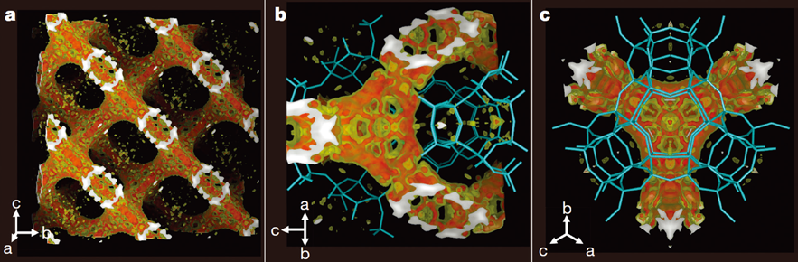

연구성과 10선
연구성과 10선
KAIST RESEARCH ACHIEVEMENTS
제올라이트 주형 내부에서
미세다공성 3차원 그래핀 유사탄소의
란타늄에 의해 촉매화된 합성
화학과 유룡
요약
그래핀 특유의 성질과 다공성 구조로 인해서 3차원형상의 그래핀 구조체는 많은 관심을 받고 있다. 이러한 탄소 물질의 합성은 제올라이트를 주형으로 사용하여 시도되어 왔다. 하지만, 높은 합성 온도 때문에 제올라이트 기공 외부에서도 탄소의 침적이 함께 일어나는 문제점이 있었다. 본 연구에서는 제올라이트 기공에 란타늄 이온을 담지시키면 에틸렌 및 아세틸렌을 이용한 탄화온도를 상당히 낮출 수 있음을 보여주었다. 이로 인해, 그래핀과 유사한 탄소 구조가 무분별한 탄소 침적 없이 선택적으로 제올라이트 기공안에 만들어 질 수 있었다. 단결정 X선 회절 분석 결과는 이 탄소가 미세기공 표면을 따라 형성되어 있음을 증명하였다. 제올라이트 주형 제거 이후에는 탄소구조가 높은 전기 전도도를 보여주었다. 더 나아가, 리튬이온전지나 촉매지지체로의 실제 응용에서 매우 중요한 과제인 많은 양의 합성도 쉽게 가능하였다.
연구배경
제올라이트는 미세기공을 갖는 결정성 알루미노실리케이트로 다양한 구조 종류에 따라 고유한 기공 크기, 모양 및 연결상태를 갖고 있다. 최근 제올라이트는 탄소 합성의 주형으로서 주목받고 있다. 제올라이트의 기공들은 풀러렌이나 탄소나노튜브 등을 품기에 적당한 크기를 갖고 있으며, 구불구불한 표면을 따라 서로 연결되어 있기 때문에 그 안에서 3차원 그래핀 구조체를 합성하기에 알맞은 주형으로 생각되어 왔다. 하지만, 제올라이트 기공은 큰 유기 화합물을 수용하기엔 너무 작기 때문에 에틸렌이나 아세틸렌과 같은 작은 탄화수소 분자들이 탄소 재료로 활용되어 왔다. 이러한 작은 탄화수소들은 일반적으로 탄화되어 기공에 고정되기 위해 높은 온도를 필요로 하는데, 이 과정에서 제올라이트 기공 내부 뿐만 아니라 겉 표면에서도 탄화 반응이 활발히 진행되곤 했다. 따라서 기존의 합성 방법으로는 순수한 제올라이트 주형 탄소를 만들지 못했을 뿐만 아니라, 제올라이트 걸 표면에 침적된 탄소로 인해 기체의 확산이 제한되어 대량 합성에도 어려움이 있었다.
800 °C이상의 높은 온도가 요구 되고, 값비싼 금속 기반의 촉매가 필요로 하는 등 아직까지도 올레핀 생성에는 많은 한계점이 존재하고 있는 실정이다. 또한, 기존에는 포스핀 물질의 제거없이 티타늄 복합체(PNP)Ti=CHtBu (CH2tBu)와 반응하여 포스피노 알킬리덴 복합체(PNP)Ti=CHPPh2(Ph) 및 H3CtBu를 형성하는 메틸렌 일라이드가 보고된 바 있으나, 이 방법은 일라이드 (H2CPPh3)의 변질로 인하여 대량의 올레핀 합성에 부적합하였다. 이러한 문제점을 해결하기 위해서, 본 연구에서는 염기성 금속 티타늄 촉매와 함께 새로운 일라이드(CH2P (C12H8)(Ph))를 활용, 온화한 조건에서 탈수소화 촉매 반응을 통하여 고리형부터 C4-C8의 선형에 이르는 알케인을 올레핀으로 변환하는 데 성공하였다.
 기공 선택적 탄화가 진행된 제올라이트의 전자 밀도 분포
연구내용
기존의 제올라이트 주형 탄소 합성 방법들이 갖는 근본적인 문제점은 높은 탄화 온도 조건이다. 본 연구에서는 제올라이트 주형의 기공 안에 담지된 란타늄 이온을 촉매로 활용하여 에틸렌이나 아세틸렌의 탄화 온도를 낮출 수 있음을 밝혔다. 란타늄 이온의 활용은 전이금속 원소들이 올레핀이나 방향족 화합물들과 d-π coordination을 통해 결합을 이루는 데에서 착안하였다. 만약 이 d-π interaction이 탄소 원료로 사용되는 에틸렌과 란타늄 이온 사이에서 일어난다면, 에틸렌이나 에틸렌의 중합체가 안정화되어 제올라이트 내부에서 탄소 구조가 잘 형성될 것이라고 생각했다. 이 가설을 입증하기 위해 본 연구에서는 기존의 탄소 합성에 사용된 소듐 이온을 담지한 제올라이트와 란타늄 이온으로 이온교환된 제올라이트를 사용하여 에틸렌의 탄화 반응을 다양한 온도에서 수행하였다. 그 결과, 기존의 합성 방법에서 사용된 온도보다 훨씬 낮은 온도인 600도에서 에틸렌의 탄화 반응이 란타늄 이온으로 이온교환된 제올라이트에서만 활발히 일어나는 것을 확인할 수 있었다. 이는 이 탄화반응이 란타늄 이온에 의해 촉매화된 것을 뜻한다. 또한, 제올라이트 기공의 부피에 해당하는 탄소의 양만큼 탄화가 진행되고 나면, 에틸렌을 계속 공급하더라도 탄화가 더 이상 일어나지 않았다. 이는 낮은 합성 온도 덕분에 기존의 합성 결과들과 달리 제올라이트 외부의 탄소층이 형성되지 않음을 보여준다. 게다가, X선 회절법을 통해 기공 내부에서 탄화가 진행된 단결정 제올라이트를 분석하여 탄소 원소의 전자 밀도의 분포를 관찰하였스다. 이를 통해 제올라이트의 구불구불한 기공표면을 따라 그래핀과 유사한 구조를 갖는 탄소가 3차원적으로 형성되어 있음을 최초로 입증하였다.
우수성과 및 기대효과
- 참고자료 [논문 1] 에 대하여 언론보도 20여회
- 참고품질의 제올라이트 주형 탄소를 대량으로 합성할 수있게 하여 리튬이온전지, 촉매지지체 등의 응용 분야에대한 연구를 수월하게 할 것으로 기대
- 제올라이트 주형 탄소는 넓은 표면적과 규칙적인 미세다공성 구조 보유, 전극재료나 촉매지지체 등 다양한 응용분야에서 우수한 성능을 보일 것으로 기대. 하지만, 합성상의 어려움 때문에 현재까지 제올라이트 주형 탄소의 응용및 특성에 대한 연구는 활성화 되지 못했음
- 본 연구는 에틸렌의 탄화를 제올라이트 기공 내부에서선택적으로 수행가능, 많은 양의 제올라이트 합성시에도 탄소 원료의 확산이 지체되지 않아 탄소의 대량 합성이 가능.
- 본 연구를 통해 제올라이트 주형 탄소의 응용 및 특성에대한 연구가 가속화 될 것으로 기대
참고자료
[논문1] K. Kim, T. Lee, Y. Kwon, Y. Seo, J. Song, J. K. Park, H. Lee, J. Y. Park, H. Lee, S. J. Cho, R. Ryoo*, “Lanthanum-catalysed synthesis of microporous 3D graphene-like carbons in a zeolite template”, Nature 535, 131-135 (2016) [2015 Impact Factor = 38.138]